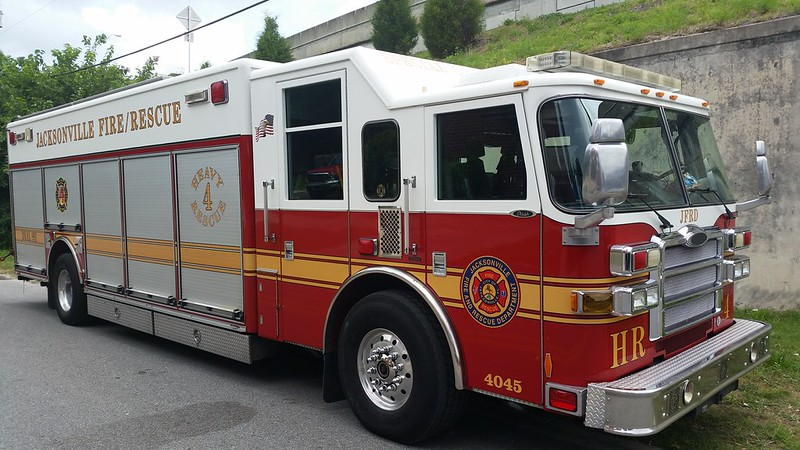
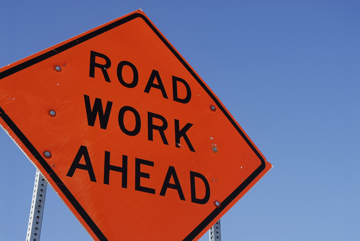
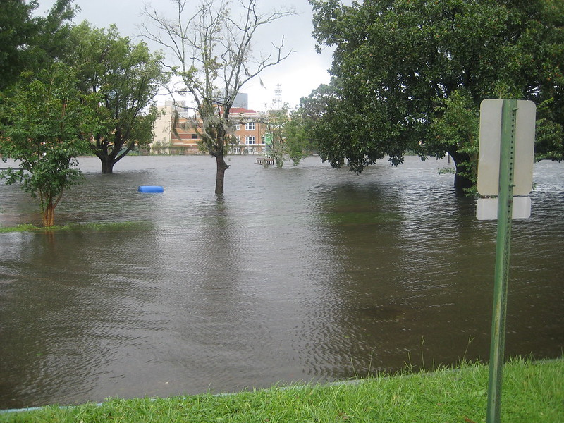
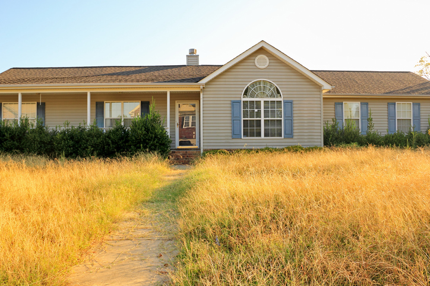

And Amendment 3 moves decision making about our community to Tallahassee.
Taken out of the roughly $2 billion the city spends each year on the Sheriff’s Office, Fire-Rescue, parks, libraries, public works and neighborhood services.1
The Sheriff’s Office and Fire-Rescue. More than half of what the city spends, and equal to 83% of all property tax revenue.
Public works, parks, libraries, neighborhoods, planning and economic development, plus health, housing, homelessness and youth programs.
Debt service, unfunded pension obligations, and interlocal agreements with Baldwin and the Beaches. Fixed by contract.
Jacksonville already invests about half as much per resident as its peer cities.2 A cut this large is not the kind of thing a city absorbs by trimming waste. It is a cut that takes away the services residents rely on.




Four changes to how property is taxed in Florida:
See note 3.
Yes. Amendment 3 does not limit your local government’s ability to increase taxes or fees for things like parks, libraries, wastewater, and impact fees to make up for lost property tax revenue.
It is likely. Eliminating such a significant share of Florida’s property tax base would require at least a significant portion of the lost revenue to be generated somewhere else, including increasing property tax rates. Increasing property taxes on rental and commercial properties means landlords and businesses will pay more, forcing them to choose between absorbing those costs or shifting them onto renters and consumers.
Nothing in Amendment 3 provides for it. The enrolled joint resolution contains no reimbursement, backfill, trust fund or offset for local revenue losses, for any county, and the implementing bill appropriates nothing.
A trust fund was in the original proposal. The filed version of the joint resolution directed the Legislature to create a fund providing grants to help local governments implement the amendment. That provision was removed before passage and does not appear in the enrolled text.
When Florida has reimbursed local governments for past property tax amendments, in 2008 and again in 2024, it did so only for counties defined in state law as fiscally constrained. Duval County has never qualified and does not qualify now. For scale, the entire statewide fiscally constrained distribution is roughly $64.7 million a year shared across 33 counties, about a fifth of Jacksonville’s projected annual loss by itself.
A future Legislature could choose to appropriate something. Nothing obligates it to, and the proposals floated so far are aimed at rural counties rather than urban ones.
See note 4.
Jacksonville already invests about half as much per resident as its peer cities.2 A reduction of this size is not the scale of thing that gets absorbed by trimming inefficiency. It is the scale of thing that removes services.
Amendment 3 is presented as relief for homeowners. It is worth knowing how narrowly that relief is distributed, because everyone shares the cost of it either way.
Jacksonville homes already pay no property tax at all. A larger exemption gives them nothing further.
of Duval parcels see no direct homestead savings, including every rented home in the city.
The homestead exemption applies to owner-occupied homes. If you rent, you receive nothing directly, while any millage increase, fee or sales-tax change used to replace the lost revenue reaches you the same as everyone else.5
Closing a gap this size is a series of choices. The budget tool lets you try making them.
© 2026 Jax Tax Facts, a project of the Jacksonville Civic Council. For public education purposes; not legal, tax, or financial advice. Jacksonville, Florida.